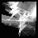
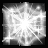

+ Assassin +
THE ASSASSIN
The Median XL assassin class fights dirty, using poisons and rapid movement to keep themselves from harm. Assassins have powerful physical and elemental melee attacks, throw deadly knives and can use mechanical bombs and automatic weapon systems.

BACKGROUND OF THE MEDIAN XL ASSASSIN
The Order of the Mageslayers, or Viz-Jaq’Taar, was created in the aftermath of the Mage Clan Wars that ravaged Kehjistan. Intended to police the Mage Clans for the creeping dark influence of magic, the Mageslayers were to seek out those who fell for the whispers of demons and destroy them before they could cause further harm.
The Mage Council, knowing very well that such an organisation would be subverted and used as a weapon by the Mage Clans themselves to settle the endemic power struggle between the Clans, went to great lengths to prevent the Mageslayers from being useful to any of the Clans. To this end, the Order would eschew the magical arts and employ mechanical and enchanted devices and the innate powers of the mind.
For both practical and symbolic reasons, the Order’s headquarters were founded in the ruins of Vizjun, once a thriving city under the Annuit Clan, now a blighted zone of death glowing with deadly mana radiation. Mageslayer initiates were taught to ritually disconnect themselves from the ethereal plane, rendering them unable to wield magic but protecting them from the pervasive radiation that cripples and kills trespassers and slowly erodes the enchanted structures of the mage city.
The Warrior Children of Vizjun, or Viz-Jaq’Taar, became a force to be reckoned with. Their unique needs necessitated the development of ever more advanced technology, and their kensais and techsmiths swarmed out over the world to combat evil on a local scale. The Order attracted the best scientists of Xiansai and other lands, and according to some even received the blessing and gifts of the very archangel of the Cosmic Spheres, Rosicruciel
While most mages are aware of the technological prowess of the Mageslayers, few know how much is really hidden from the outside world at Sector D, the Viz-Jaq’Taari base in the Aranoch desert, camouflaged by a light-bending cloak field. It is whispered that the inner circle of Mageslayers is in possession of ever-burning lanterns powered by trapped lightning, gleaming flying chariots, disintegrating beams of light and metallic arrows with tails of fire that can strike any location in the known world.
But no one knows for sure because the canyon leading to the compound is considered cursed by the locals and protected by hidden traps, holographic illusions and cybernetic death rays.
Today the Order operates 209 secret bases, some manned, others entirely automated, some located in the basement of a friendly villager in the endless jungle, others sprawling underwater complexes in the Sea of Light guarded by trained hammerhead sharks with heat rays mounted on their heads.
All bases are centrally controlled by an artificial sentient system which according to the few spies that made it out alive was lifted by metal angels up beyond the High Heavens...
BASE STATS
Chance to block: 4%
Strength: 20
Dexterity: 35
Vitality: 15 (65 life)
Energy: 15 (15 mana)
+25 life, +15 mana per level
Gains +2 life per point into vitality
Gains +4 mana per point into energy
PREFERRED WEAPONS
Assassins are trained in all disciplines of the martial arts and master their arts’ weapons.
Martial artists who prefer either the protection of a shield or the intimidation factor of two blades train in the Viz-Jaq’Taar’s exotic claw fist weapons. Their large metal surfaces conductive to manaflux currents make them ideal for those who seek the aid of the psychic arts as well.
Kensais who wield the fearsome naginata are known as blademasters. The naginata is one of the rarest weapons in the Kingdoms and most existing naginata are centuries old, passed on through generations by the Xiansai warrior-monks. Its combat style emphasis its long range, attacking with sweeping arcs of death that cleave through multiple enemies, enabling one blademaster to fend off an army.
Class-specific 1h weapon: Claw
Class-specific 2h weapon: Naginata (On hit: area effect attack)
PREFERRED ARMOUR
With most attention of the Viz-Jaq’Taari techsmiths going to weapons, and their lightning-fast martial arts, few notable developments in the field of armourcrafting can be attributed to the Order. One important invention, however, are the crowd control shields employed by the Mageslayer urban strike forces, created from light but strong exotic alloys or specially treated demon bone with similar properties.
Class-specific shield: Assassin Shield
CLAW SKILLS
| Name | Icon | Effect |
|---|---|---|
| Batstrike | The Viz-Jaq’Taar prefer subterfuge over raw strength. This technique uses her blades to channel
her psychic powers, allowing her to unleash various supernatural effects. Effect: charged melee attack that summons bats or converts enemies |
|
| Crucify | The assassin’s specially treated blades splinter when they strike flesh or steel, scattering
razor sharp shards every which way; the shards are then magnetically attracted to enemy
armor. Effect: melee attack that unleashes homing spikes |
|
| Queen of Blades |  |
An ancient invention of the Viz-Jaq’Taari techsmiths, this weapon system scans the vicinity for
enemies and uses a magnetic field to propel waves of bouncing blades towards them. Effect: periodically casts bouncing shuriken at enemies |
| Barrier Strike | A kensai is an expert in one-on-one combat, but is not trained in battlefield tactics. This
telekinetic fence of spinning blades keeps nearby enemies away, allowing her to destroy her
opponent without outside interference. Effect: melee attack that creates a circle that repels and damages enemies |
|
| Doom | This feared weapon system employs a field of invisible nanobots which are triggered by a violent
weapon impact, exploding and adding their force to the attack. Curse effect: adds points to physical damage taken |
NINJA SKILLS
| Name | Icon | Effect |
|---|---|---|
| Way of the Spider |  |
Even a novice Mageslayer knows how to brew a deadly poison from common plants and coats her
weapons with venom to quickly finish off a dangerous foe. Passive effect: adds poison damage to attacks, improves poison skills |
| Shadow Refuge |  |
Retreating into the astral plane after a strike, the assassin avoids incoming counterattacks,
moving like a bolt of lightning and delivering a lethal blow from behind. Effect: powerful attack that temporarily raises speed and damage reduction |
| Twin Fang Strike | After much analysis of battle outcomes and statistics, the Viz-Jaq'Taari techsmiths created this
bubbling concoction of pyrophoric poisons, enabling the assassin to damage enemies with a
variety of immunities. Effect: melee attack that unleashes poison and fire novas |
|
| Laserblade | Any naginata can crudely disembowel a demon, but when balanced to the nanometer it will vibrate
while cutting through bone at the exact frequency of a demon's nervous system. Passive effect: adds magic damage to a naginata's sweep attack |
|
| Way of the Phoenix | Flaming weapons are doubly dangerous, both to the target and to the wielder. Only a master
kensai can use the Order’s incendiary oils effectively in combat. Passive effect: adds fire damage to attacks, improves fire skills |
THROWING KNIFE SKILLS
| Name | Icon | Effect |
|---|---|---|
| Scorpion Blade |  |
The tool of choice for a quick kill at a distance, this toxic blade cuts deep and delivers a
dose of corrosive oil, causing a lethal festering wound that is fatal to most mortal
victims. Effect: enchants throwing knife to deal poison damage |
| Storm Crows |  |
The art of throwing multiple knives is widespread, but the Mageslayers have added something of
their own: a miniature target acquisition and tracking system. Effect: throw multiple homing knives |
| Wychwind | The Order regrets not having found a technological way to reproduce this field of deadly void
rifts. Using forbidden magic burns the assassin’s spirit and physically weakens her. Effect: knife that creates a rift field on impact, but weakens the user |
|
| Maelstrom MK III |  |
Combining the old Maelstrom weapon system with the results of their failed rocketry experiments,
the techsmiths turned around this very expensive failure and created a deadly weapon in its own
right. Effect: explosive rocket-propelled knife that emits shrapnel novas in flight |
| Broadside | This advanced device magnetically launches all of the assassin's stored knives at multiple
targets. This does leave the user without ammunition while the system goes through the molecular
reconstruction process. Effect: devastating knife storm that temporarily disables ranged skills |
TRAP SKILLS
| Name | Icon | Effect |
|---|---|---|
| Cluster Mine | The assassin places a field of high explosive mines in front of an advancing enemy horde. After
a short bootup sequence, the mines are armed and ready to ruin a demon's day. Effect: places a field of mines at target location |
|
| Cryo Beam | Faced with the limitations of mines and traps in open battle, the Mageslayers developed an
easily portable sidearm that uses a small elemental charge to fire a bolt of stasis energy. Effect: laser bolt that pierces through enemies, freezing them |
|
| Electrofield Sentry | This sentry emits powerful static arcs until it eventually tears itself apart under its own
magnetic forces, resulting in a large electrical shockwave. While this destroys the trap, it is
a powerful weapon in its own right Effect: lightning field sentry that explodes with a nova |
|
| Fireball Sentry | When this napalm spitting trap overheats, the oil tank goes up in a massive explosion. This is
an unexpected surprise to anyone attempting to avoid the projectiles by circling the trap. Effect: fireball sentry that explodes with a ring of fire |
|
| Singularity |  |
This device creates a local gravity well. Although the vortex is too small to suck in enemies,
the tidal effects wreak havoc on those who approach the event horizon. Effect: trap that creates a black hole |
UTILITY AND PSYCHIC SKILLS
| Name | Icon | Effect |
|---|---|---|
| Blink |  |
Using basic principles of molecular entanglement, the user of this device is displaced to the
desired location with a blinding flash and deafening sonic boom. Effect: teleport to target spot, stunning nearby enemies |
| Starburst | The assassin throws a flurry of blades around her to slay nearby enemies. If the blades miss, a
built-in target tracking system is activated and alters their rotational speed to track and
chase down targets. Effect: throw multiple homing shuriken |
|
| Bionetic Blast | For some people their hatred of an individual manifests as a poltergeist or a bad luck spirit.
For a well trained assassin, it is a ball of force to rip the object of her hatred to
pieces. Effect: psionic orb that explodes with concussive force based on energy |
|
| Psionic Storm |  | The Order's ancient meditation techniques are designed to develop latent psychic powers.
Originally used for espionage and subterfuge, zen mistress Kassar de Templari took the
discipline in a decidedly more offensive direction. Effect: manifest a storm whose damage is based on energy |
| Perfect Being | The senshi masters the mind and body, dodging attacks in a flash. Blades and bolts of fire
seemingly pass right through her as if she was not even there. Passive effect: grants a chance that incoming attacks miss |
UBERSKILLS
You may choose a single uberskill at character level 90.
| Name | Icon | Effect |
|---|---|---|
| Beacon | Many mage clans have their own dark secrets hidden in the catacombs under their towers or in an
extraplanar library. Few know Sector D harbours the most terrible secret of all, the power to
destroy the world. Effect: periodically targets a nuclear strike at a random nearby location |
|
| Way of the Gryphon |  |
It is difficult to build a small enough galvanic cell to integrate into a weapon, but the
advantages of a lightning charged blade are worth the effort. Passive effect: adds lightning damage to attacks, improves lightning skills |
| Phase Bomb |  | This bomb enemies into the ethereal plane. This weakens them to ethereal magical attacks, but
the energy gradient destroys anything that comes into contact with the phase shifted
victims. Effect: lowers enemy resistances, but disintegrates physical attackers |
ENNEAD SKILL
After completing the Ennead Challenge and keeping the Class Charm in the inventory while at character level 90 and above, you can invest points in this skill.
See THIS PAGE for more information about the Ennead Challenge.
| Name | Icon | Effect |
|---|---|---|
| Vampiric Icon | An assassin knows very well that most mages are male and many spend their life in seclusion
without seeing a woman. Some who have trained in these particular arts can also employ this
strategy on the battlefield. Effect: burns an unholy female sign on the ground in life stealing flames |
BLACK ROAD SKILL
After completing the Black Road Challenge and keeping the Class Charm in the inventory, you can invest points in this skill.
See THIS PAGE for more information about the Black Road Challenge.
| Name | Icon | Effect |
|---|---|---|
| Psychic Scream |  |
There are two schools in psychic training. The most common school promotes balance of mind and
peace of thoughts. This is a creation of the other school: a primal scream that overwhelms
weaker minds with pain and confusion. Effect: short ranged shockwave that forces enemies to flee |
INNATE SKILL
Assassins start with the following skill in their icon list.
| Name | Icon | Effect |
|---|---|---|
| Bloodbath | The secret of eternal youth is at the assassin's command. When the correct chemical catalysts
are employed, a demon's blood if properly spilled is actually a rejuvenating agent. Effect: vampiric dual claw melee attack that returns life on kills |